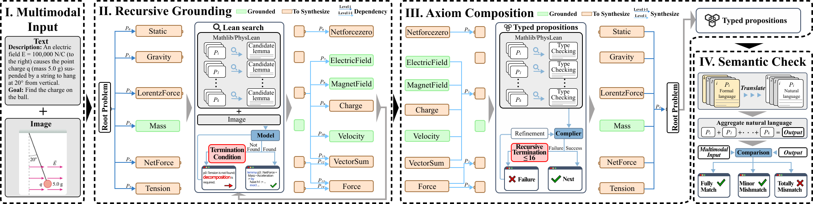

Autoformalizes multimodal math and physics problems into Lean statements using Mathlib and PhysLean dependencies, with compile and semantic accuracy evaluation.
Abstract
Autoformalization, which translates natural language mathematics into formal statements to enable machine reasoning, faces fundamental challenges in the wild due to the multimodal nature of the physical world, where physics requires inferring hidden constraints (e.g., mass or energy) from visual elements. To address this, we propose MMFormalizer, which extends autoformalization beyond text by integrating adaptive grounding with entities from real-world mathematical and physical domains. MMFormalizer recursively constructs formal propositions from perceptually grounded primitives through recursive grounding and axiom composition, with adaptive recursive termination ensuring that every abstraction is supported by visual evidence and anchored in dimensional or axiomatic grounding. We evaluate MMFormalizer on a new benchmark, PhyX-AF, comprising 115 curated samples from MathVerse, PhyX, Synthetic Geometry, and Analytic Geometry, covering diverse multimodal autoformalization tasks. Results show that frontier models such as GPT-5 and Gemini-3-Pro achieve the highest compile and semantic accuracy, with GPT-5 excelling in physical reasoning, while geometry remains the most challenging domain. Overall, MMFormalizer provides a scalable framework for unified multimodal autoformalization, bridging perception and formal reasoning. To the best of our knowledge, this is the first multimodal autoformalization method capable of handling classical mechanics (derived from the Hamiltonian), as well as relativity, quantum mechanics, and thermodynamics. More details are available on our project page: MMFormalizer.github.io
Problem
Autoformalization has largely been limited to text and symbolic geometry. Multimodal problems in mathematics and physics require grounding visual elements and hidden physical constraints in formal statements, and there is little infrastructure for integrating physics libraries such as PhysLean into autoformalization pipelines.
Approach
MMFormalizer recursively grounds images into scene graphs of perceptual primitives. It lifts these into chains of Lean lemmas encoded with Sigma- and Pi-types, then composes axioms retrieved from Mathlib and PhysLean. Adaptive recursive termination stops decomposition at dimensional or axiomatic primitives, such as the Hamiltonian. A Lean compiler check validates the generated statements, and a toolkit deploys physics theorem search over the dependency libraries.

Figure 3: The pipeline overview consists of three stages: Recursive Grounding , identifying physical primitives (the red parts in the figure, e.g., the Hamiltonian or dimensional quantities) for Termination , and Axiom Composition . The blue parts in the figure indicate the compiler checking process. The green part indicates the formal statements we retrieved from the dependency library.
Results
On the new PhyX-AF benchmark of 115 samples (MathVerse, PhyX, Synthetic Geometry, Analytic Geometry), GPT-5 and Gemini-3-Pro achieve the highest compile and semantic accuracy. GPT-5 is strongest on physics, and geometry remains the hardest domain. Case studies include classical mechanics, relativity, quantum tunneling, and thermodynamics.